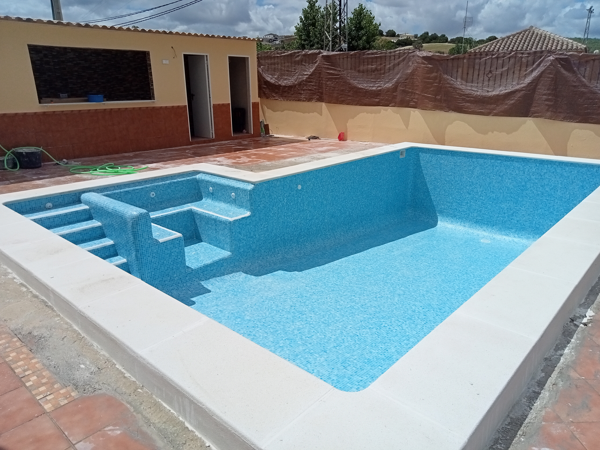
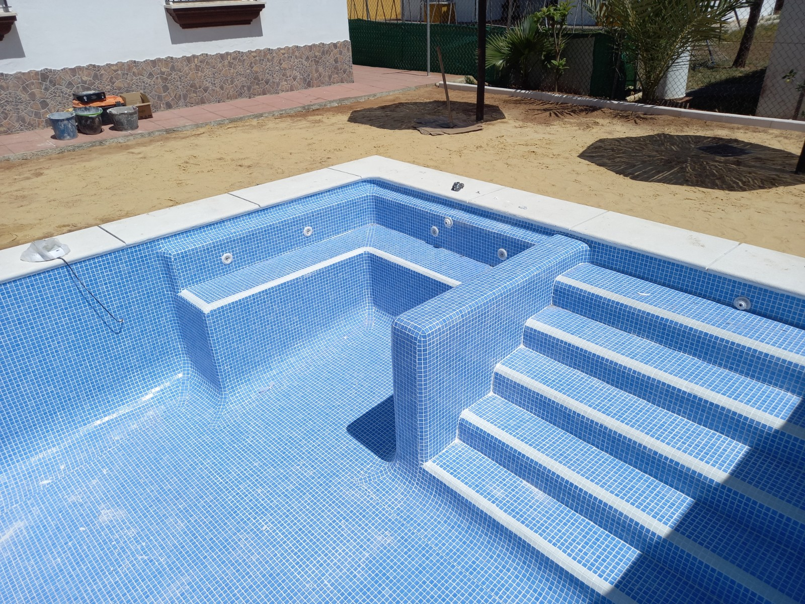
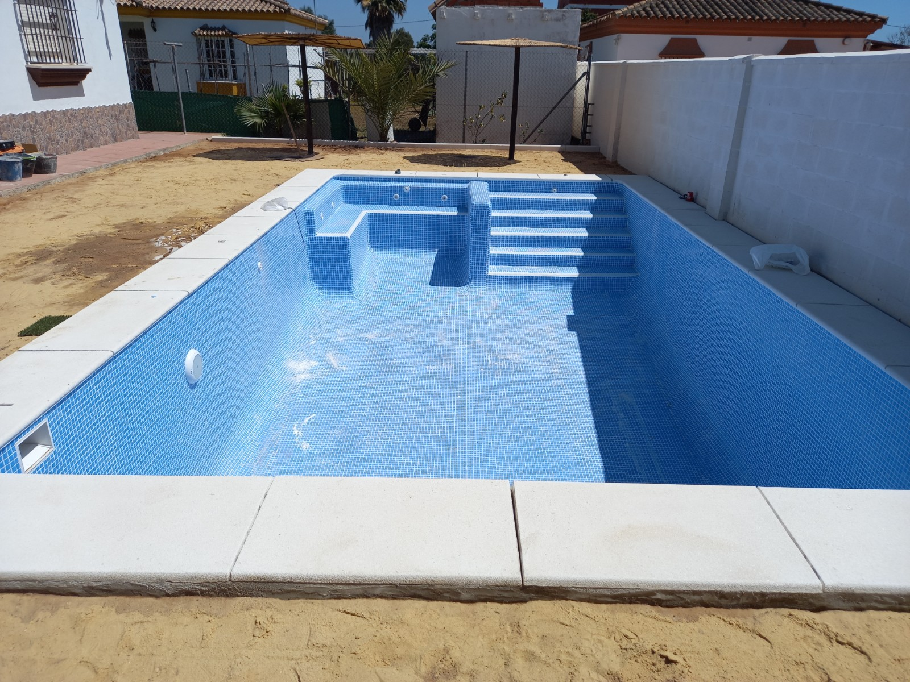
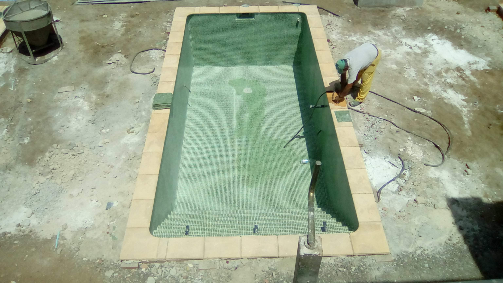
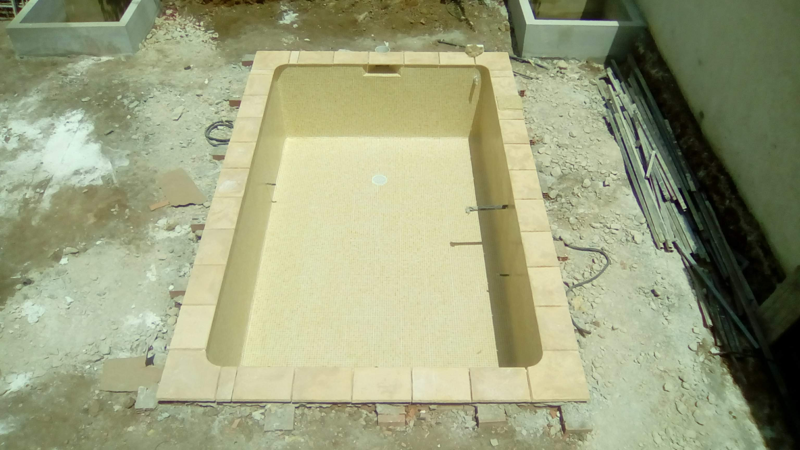
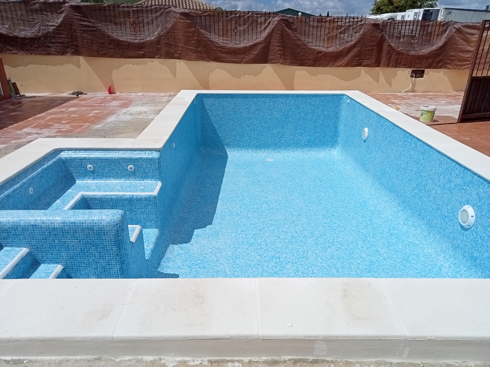

Construcción
Integramos el acabado con la forma del vaso, los accesos y la coronación.
Ver nuestras construcciones ↗OCM POOL · MATERIALES Y ACABADOS
Acabados en gresite para piscinas en Arcos y Cádiz. El mosaico acompaña la forma del vaso y da continuidad a paredes, fondo, escaleras y bancos.
Consultar mi acabado ↗
EL DETALLE CAMBIA TODO
El gresite es un revestimiento de pequeñas teselas. En estas fotografías puedes ver cómo se integra en superficies curvas, escaleras de obra y zonas de asiento.
La elección empieza por el aspecto que buscas y por el estado del vaso. Estudiamos el soporte, los encuentros y el sistema de colocación para definir el alcance del trabajo.
Podemos valorar este acabado tanto en una piscina de nueva construcción como en una reforma.
COLORES Y DETALLES
Fotografías de vasos sin agua para apreciar el mosaico. El aspecto del color en la foto depende de la iluminación; no equivale a una muestra de producto.





ELEGIR CON CRITERIO
Azules, verdes y tonos claros permiten plantear ambientes diferentes. Para elegir conviene ver muestras reales y valorar cómo se relacionan con la coronación y el exterior.
El color percibido del agua también depende de la profundidad, la luz y el entorno. Las fotos de estos vasos vacíos muestran el revestimiento, sin prometer un tono concreto del agua.
Los encuentros de paredes, escaleras y bancos merecen especial atención. Definimos los detalles dentro del conjunto de la obra.
ANTES DE EMPEZAR
Integramos el acabado con la forma del vaso, los accesos y la coronación.
Ver nuestras construcciones ↗Revisamos el revestimiento existente y el soporte antes de decidir qué trabajos necesita la piscina.
Ver nuestras reformas ↗Podemos estudiarlo tras revisar el estado del revestimiento y del vaso. El presupuesto dependerá de la preparación necesaria y del acabado elegido.
Partimos de tus preferencias y revisamos muestras. Las fotografías sirven como referencia visual, pero la luz, el agua y el entorno cambian el aspecto percibido.
Sigue las indicaciones de los productos instalados para la limpieza y el cuidado de las juntas. Si aparecen piezas sueltas o juntas deterioradas, conviene revisar la zona.
La localidad, medidas aproximadas y fotos del vaso, junto con una descripción de lo que quieres renovar o construir.
EMPECEMOS POR TU IDEA
Envíanos unas fotos, la localidad y las medidas aproximadas de tu piscina.
Pedir presupuesto por WhatsApp